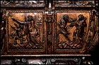
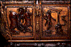

Phaeton journeyed east to the sun god's grand royal palace. Helios welcomed his son and, to prove their bond, promised young Phaeton any favor he wished. He did not anticipate that the headstrong boy would ask for permission to drive his powerful chariot by himself for a day. Bound by his promise, Helios had to give in. Just before daybreak Phaeton donned his father's solar crown and stepped into the shining chariot. Sensing unfamiliar hands on the reins, the sun horses thundered off across the sky, veering far off their usual course.
Unrestrained, the horses headed through the northern constellations. Chaos ensued. Warmed by the sun for the first time ever, the small and great bears became restless. The usually placid serpent became threatening and the plowman ran away, even though he was not used to moving quickly, because of the weight of his plow. The startled black scorpion prepared to sting Phaeton.
Panicked, Phaeton let go of the reigns and the chariot careened haphazardly through the sky. When it fell too close to the earth, scorching areas into desert, the earth pleaded for help. Zeus (zoose) came to the earth's rescue, hurling a mighty lightning bolt, which shattered the chariot into many pieces. Phaeton tumbled to his death in a river. Mourning for Phaeton, his sisters turned into poplar trees, from which their tears flowed and hardened into drops of amber.
The Italian Renaissance
During the 14th and 15th centuries, many Italian cities became important European centers of industry and trade.
Living conditions improved and people became more interested in their earthly
existence than with life after death, a significant reversal of the attitudes
of their medieval predecessors. The term Renaissance, meaning "rebirth,"
derives from this renewed interest in life on earth and a new confidence in
humankind's potential for achievement. A revival of the art and literature of
the ancient Greeks and Romans, which began in the 13th century, contributed to
the humanism of Renaissance Italy and greatly influenced its art. Renaissance
art became increasing NATURALISTIC as artists studied their own world and
classical art.
In order to reconcile the classical past with Christian beliefs, Renaissance scholars looked for Christian morals in classical myths whose original meanings were no longer understood. For example, Phaeton's unsuccessful efforts were equated with Lucifer's attempts to get too close to god. Moralizers drew connections between Phaeton's demise and the Old Testament text of Isaiah 14:12 - "How art thou fallen from heaven, O Lucifer, son of the morning." Scenes of Phaeton falling from his chariot were thus very popular in Renaissance art.
Cassone
This type of chest is usually referred to by its Italian
name, cassone. Cassoni (cass-OH-nee) were most often used as marriage
chests to hold brides' household linens. Especially popular from the 14th to
the 16th century, cassoni usually featured scenes from the classical mythology
so popular at this time. This cassone exemplifies the Italian Renaissance
style of art, particularly in its attention to the human body, the illusion of
realistic spaces achieved through PERSPECTIVE techniques, and its adaptation of
classical motifs.

This cassone tells the story of Phaeton in four carved panels. The first
vignette shows young Phaeton cavorting with the child who taunted him. Typical
of Renaissance figures, their bodies are turned and their knees are bent to
convey a sense of movement. Their windblown drapery enhances the sense of
action. Their pseudo-Greek garb and tightly curled hair evoke ancient Greek
sculpture. The artist achieved a believable sense of depth by carving the
frontmost figure in deeper RELIEF.
In the second panel, Phaeton's mother points in the direction of the sun,
represented as a stern human face with rays. Phaeton eagerly reaches out
toward his father. His partially nude body is babylike, reminiscent of Greek
carvings of Cupid. Again, action is achieved with billowing drapery. The
artist creates the illusion of space by carving the doorway behind the figures
in low relief and by making the distant sun very small.
 The third scene shows Phaeton on his knees before his mighty father, who is here represented as a man standing on a decorated platform. The marvelous palace of Helios recalls classical architecture.
The cassone's final panel shows the image of Phaeton most familiar during
the Renaissance. Phaeton, now represented fully nude and adult, tumbles from
the chariot alongside two falling horses. The anatomy of Phaeton and the
horses is remarkably well rendered.
Many adaptations of classical motifs decorate this elaborate cassone. On
the corners are harpies - monsters with the heads and breasts of women and the
wings and claws of birds - which were said to torment misers. Harpies
symbolized the deadly sin of greed (avarice) in many Renaissance moral
allegories. The five heads punctuating the horizontal band above the main
scenes and the single large face at the center bottom of the chest are
variations on satyr and gorgon masks that often decorated classical
architecture. One face conceals the key hole in its mouth. Around these faces
are anthemia, conventional floral motifs based on the honeysuckle or palmette.
The leaves in the narrow band around the lid of the cassone are acanthus,
another popular classical decoration.
2. The people of the Italian RENAISSANCE were fascinated with ancient Greek and Roman cultures. What clues does the artist give us that the story has Greek origins? (Clothing and tightly curled hair evoke ancient Greek sculpture, and there is Greek architecture in the panel background.) Can you see anything else that reminds you of ancient Greece on this cassone? (Answers might include: Figures on the corners of the chest are Greek monsters said to torment misers. Heads above the pictorial panels and face at the center bottom of the chest often decorated classical architecture.)
3. Where do you see straight lines in these panels? (Architectural structures in the BACKGROUND of the panels.) Where do you see curved lines? (Figures, clothing, horses, and chariot.) What effect do all the curved lines in the figures and their clothing have? (Give the figures a sense of movement and action.)
4. Italian RENAISSANCE artists were very interested in creating the illusion of depth in their work. The artist who carved this cassone used OVERLAPPING, SCALE (the scale of objects far away in a space appear smaller than objects in the foreground), and HORIZON LINES to create a sense of deep space. Show image 9a. What appears farthest from you? Closest to you? Where has the artist used overlapping? (The figures in the right panel overlap the doorway.) Where has the artist used scale to show distance? (The very small sun in the right panel.) Show image 9b. What appears farthest from you? Closest to you? Where has the artist used overlapping? (The figures in the left panel overlap the building. The figure of Phaeton in the right panel overlaps the carriage and the horses.) Where has the artist used a horizon line? (The panel on the left.)
2. The story of Phaeton is a story about a boy who "bit off more than he could chew"! What does that mean? (Taking on more than you're equipped to handle.) Have you ever bitten off more than you could chew? What happened? How was the problem resolved?
3. Cassoni were most often used as marriage chests to hold brides' household linens. What is the moral of the story of Phaeton? (Too much ambition is unhealthy!) Why might this story be appropriate for a marriage chest? (Unrestrained ambition may have disastrous effects on a marriage.)